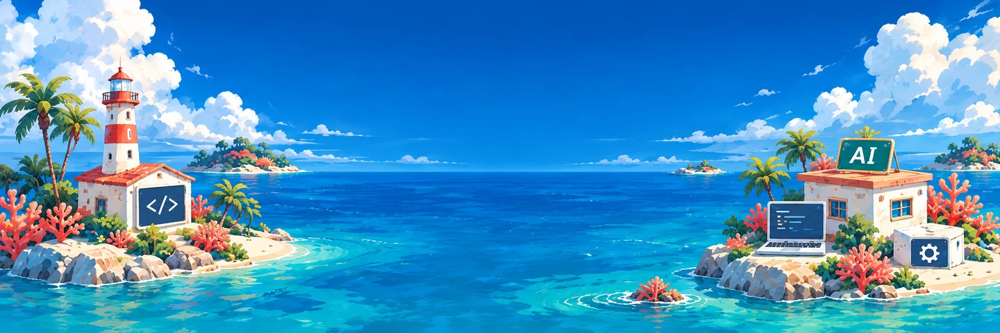

<!doctype html>
<html lang="zh-CN">
<meta charset="utf-8">
<meta name="viewport" content="width=device-width, initial-scale=1">
<meta name="color-scheme" content="light dark">
<title>海面互动 · 小王很忙</title>
<style>
  :root {
    color-scheme: light dark;
    --paper: #f1fbfc;
    --ink: #123653;
    --blue: #086ca2;
    --line: #b6dbe4;
  }
  @media (prefers-color-scheme: dark) {
    :root { --paper: #092337; --ink: #e8faff; --blue: #9ceafa; --line: #34586b; }
  }
  * { box-sizing: border-box; }
  body {
    margin: 0;
    background: var(--paper);
    color: var(--ink);
    font: 1rem/1.6 "Microsoft YaHei", "PingFang SC", system-ui, sans-serif;
  }
  main { width: min(70rem, calc(100% - 2rem)); margin: auto; }
  header { padding: clamp(2rem, 6vw, 4.5rem) 0 1.4rem; }
  h1 { margin: .5rem 0 .15rem; font-size: clamp(2.15rem, 6vw, 4rem); line-height: 1.2; }
  p { margin: .6rem 0; }
  a { color: var(--blue); text-underline-offset: .2em; }
  .sea {
    position: relative;
    overflow: hidden;
    border: 1px solid var(--line);
    border-radius: .8rem;
    aspect-ratio: 3 / 1;
    background: #07568c;
  }
  .sea img, canvas { position: absolute; inset: 0; width: 100%; height: 100%; }
  .sea img { object-fit: cover; }
  canvas { pointer-events: none; }
  .controls { display: flex; align-items: center; flex-wrap: wrap; gap: .7rem 1rem; padding: 1rem 0 2rem; }
  button {
    border: 1px solid var(--blue);
    border-radius: 5rem;
    background: transparent;
    color: var(--ink);
    padding: .45rem .95rem;
    min-height: 44px;
    cursor: pointer;
    font: inherit;
  }
  button:disabled { opacity: .6; cursor: default; }
  :focus-visible { outline: 3px solid #ed775e; outline-offset: 4px; }
  @media (max-width: 550px) { .sea { aspect-ratio: 1.65 / 1; } }
</style>
<main>
  <header>
    <a href="https://github.com/pink-mimi">← 返回小王很忙的 GitHub 主页</a>
    <h1>海面互动</h1>
    <p>移动鼠标或轻点海面，看水波慢慢散开。</p>
  </header>
  <div class="sea" id="sea">
    
    <canvas aria-hidden="true"></canvas>
  </div>
  <div class="controls">
    <button id="ripple" type="button" disabled>泛起水波</button>
    <button id="pause" type="button" aria-pressed="false" disabled>暂停水波</button>
    <span id="motion-status" role="status"></span>
  </div>
</main>
<script>
  const sea = document.querySelector('#sea');
  const canvas = sea.querySelector('canvas');
  const rippleButton = document.querySelector('#ripple');
  const pauseButton = document.querySelector('#pause');
  const status = document.querySelector('#motion-status');
  const reducedMotion = matchMedia('(prefers-reduced-motion: reduce)');
  const ctx = canvas.getContext('2d');
  const ripples = [];
  let paused = false;
  let frame = 0;
  let lastMove = -Infinity;
  let width = 0;
  let height = 0;

  function syncMotion() {
    rippleButton.disabled = reducedMotion.matches || paused;
    pauseButton.disabled = reducedMotion.matches;
    pauseButton.setAttribute('aria-pressed', String(paused));
    pauseButton.textContent = paused ? '恢复水波' : '暂停水波';
    status.textContent = reducedMotion.matches ? '已跟随系统设置减少动态效果。' : '';
    if (rippleButton.disabled) {
      cancelAnimationFrame(frame);
      frame = 0;
      ripples.length = 0;
      ctx.clearRect(0, 0, width, height);
    }
  }

  function draw(time) {
    ctx.clearRect(0, 0, width, height);
    while (ripples.length && time - ripples[0].start >= 1150) ripples.shift();
    for (const { x, y, start } of ripples) {
      const progress = Math.max(0, (time - start) / 1150);
      const radius = 10 + progress * Math.min(width * .19, 138);
      const opacity = (1 - progress) ** 1.8;
      for (let ring = 0; ring < 3; ring++) {
        const size = radius - ring * 13;
        if (size <= 2) continue;
        ctx.beginPath();
        ctx.ellipse(x, y, size, size * .48, 0, 0, Math.PI * 2);
        ctx.lineWidth = ring === 0 ? 2 : 1;
        ctx.strokeStyle = `rgba(192,250,255,${opacity * (0.84 - ring * .2)})`;
        ctx.stroke();
        ctx.beginPath();
        ctx.ellipse(x, y + 2, size, size * .48, 0, .15, Math.PI * .9);
        ctx.strokeStyle = `rgba(0,52,93,${opacity * .45})`;
        ctx.stroke();
      }
    }
    frame = ripples.length ? requestAnimationFrame(draw) : 0;
  }

  function addRipple(x, y) {
    if (reducedMotion.matches || paused) return;
    if (ripples.length === 12) ripples.shift();
    ripples.push({ x, y, start: performance.now() });
    if (!frame) frame = requestAnimationFrame(draw);
  }

  function rippleAtPointer(event) {
    const bounds = sea.getBoundingClientRect();
    addRipple(event.clientX - bounds.left, event.clientY - bounds.top);
  }

  if (ctx) {
    new ResizeObserver(() => {
      width = sea.clientWidth;
      height = sea.clientHeight;
      const scale = Math.min(devicePixelRatio || 1, 2);
      canvas.width = Math.round(width * scale);
      canvas.height = Math.round(height * scale);
      ctx.setTransform(scale, 0, 0, scale, 0, 0);
    }).observe(sea);
    sea.addEventListener('pointermove', event => {
      if (event.pointerType !== 'mouse' || event.timeStamp - lastMove < 85) return;
      lastMove = event.timeStamp;
      rippleAtPointer(event);
    });
    sea.addEventListener('pointerdown', rippleAtPointer);
    rippleButton.addEventListener('click', () => addRipple(width * .5, height * .72));
    pauseButton.addEventListener('click', () => {
      paused = !paused;
      syncMotion();
    });
    reducedMotion.addEventListener('change', syncMotion);
    syncMotion();
  }
</script>
</html>
